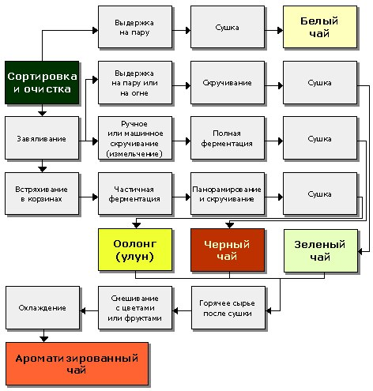

Европейская классификация чаев
Существует так называемая европейская классификация чаев, в которой напиток разделяется на пять видов: белый чай, желтый чай, зеленый, красный и черный. А согласно китайской классификации, существует шесть сортов чая, здесь к зеленому, желтому, белому и красному добавляется чай пуэр и улун (бирюзовый чай).
ЗЕЛЕНЫЙ ЧАЯ
Зелёный чай — чай, подвергнутый минимальной ферментации. И зелёный, и чёрный чай получают из листьев одного и того же чайного куста, однако различными способами.
Для чая можно использовать засушенные или свежие ягоды земляники, и даже веточки и листья.
БЕЛЫЙ ЧАЙ
Белый чай — вид чая, подвергающийся слабой ферментации (окислению).
Белый чай по классификации по степени ферментации стоит на втором месте после зелёного, примерно 5-7 % ферментации.
Название "белый" получил по виду чайной почки, которая густо покрыта белым ворсом.
Также по терминам пяти элементов в китайской медицине соответствует элементу "металл", который традиционно ассоциируется с белым цветом.
Основная идея белого чая — сохранить чайный лист в том виде, в котором он растёт на кусте, сохранив максимум природного, естественного при минимальном человеческом воздействии.
ЖЕЛТЫЙ ЧАЙ
Жёлтый чай — вид чая, подвергшийся слабой ферментации (окислению). Жёлтый чай по классификации по степени ферментации стоит на третьем месте после зелёного, примерно 7—10 % ферментации.
Жёлтый чай изготавливается из сырья высокого качества, исключительно в Китае, в провинциях Сычуань, Хунань, Чжецзян, Фуцзянь. Считается императорским чаем, очень долгое время жёлтый чай тщательно оберегался от иностранцев, за разглашение его тайн строго карали.
Известен с эпохи Тан (VIII век н. э.). Долгое время был привилегией только императора и высшей знати
ЧАЙ УЛУН, ИЛИ БИРЮЗОВЫЙ ЧАЙ
Улун, или "бирюзовый чай" — полуферментированный чай, который по китайской классификации занимает промежуточное положение между зелёным и "красным" (то есть чёрным).
По классификации по степени ферментации ферментируется на 50 % (в идеале).
При его обработке ферментацию не доводят до конца: ей подвергается не весь лист, а лишь его края и часть поверхности.
В то же время внутренние слои чайного листа сохраняют присущую им структуру и не ферментируются.
Поэтому считается, что "улун" сочетает в себе свойства как зелёного — яркий аромат, так и красного — насыщенный вкус.
Различают два подвида — ближе к зелёным (степень ферментации меньше) и ближе к красным чаям (степень ферментации больше).
ЧАЙ ПУЭР, ИЛИ ТЕМНЫЙ ЧАЙ
Пуэр — постферментированный чай, один из самых дорогих сортов чая в мире.
Отличается специфической технологией производства: собранные листья, обработанные до уровня зелёного чая, подвергаются процедуре микробной ферментации — естественному либо искусственному (ускоренному) старению.
Ферментация происходит под действием Aspergillus acidus, плесневых грибов рода Аспергилл.
КРАСНЫЙ ЧАЙ
Чёрный чай — вид чая, подвергающийся полной ферментации (окислению) в течение от двух недель до месяца (по традиционной технологии).
Традиционно наиболее популярный вид чая в Европе, включая Россию.
Название «чёрный чай» закрепилось в Европе, в Китае этот тип чая называется кра́сным, а «чёрным чаем» китайцы именуют пуэр.
Чёрный чай бывает байховым, гранулированным, пакетированным и плиточным. Может быть ароматизирован, например, бергамотовым маслом («Эрл Грей»).
Вкус чёрного чая лишён горечи, настой имеет оранжевый или красный цвет. Чай обладает сложным действием, одновременно тонизирующим и успокаивающим.
Подаётся обычно без добавок или с сахаром, лимоном, молоком или сливками, часто сопровождает десерт.
Научные исследования показали, что добавление мёда усиливает антиоксидантную активность черного чая с лимоном.